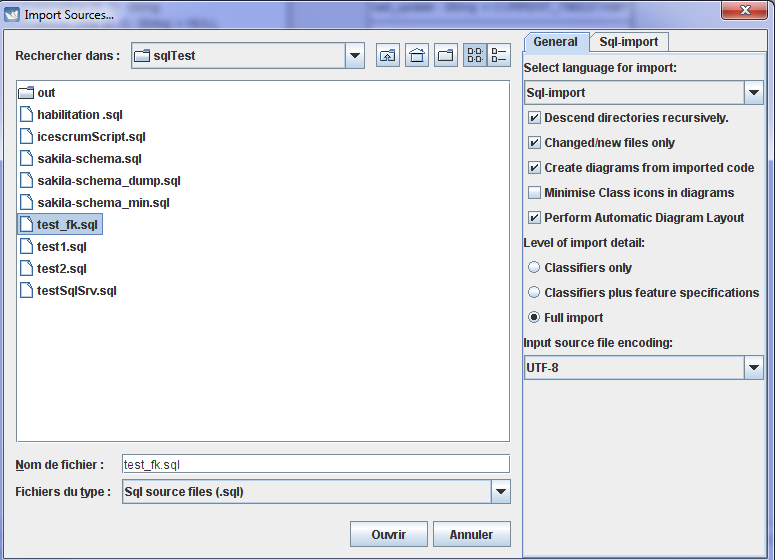
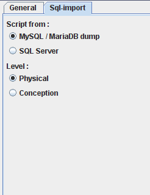
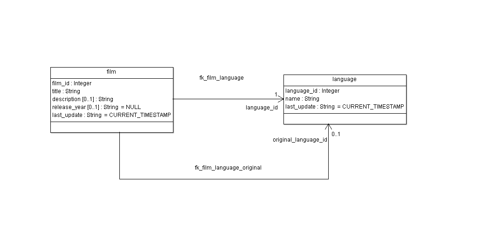

Parsing DDL Script with this module is in progress (0.35.1 ?). With this release you can import some scripts from :
Here is a example, extract of Sakila
Choose File / Import Sources... 
Note that you might have to choose "UTF-8" as encoding.

You have to choose the database : Mysql/MariaDB or Sql Server.
For this example, choose Mysql/MariaDB.
Result with Physical model :
A FK become an association and each attribute of FK is in the table. Stereotype <<Table>>, <<PK>> and <<FK>> are created in the project.
Result with Conception model :  A FK can become :
The name of the association end is :